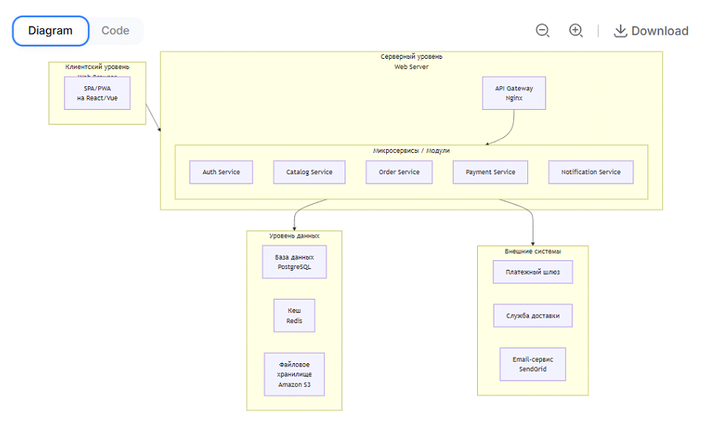
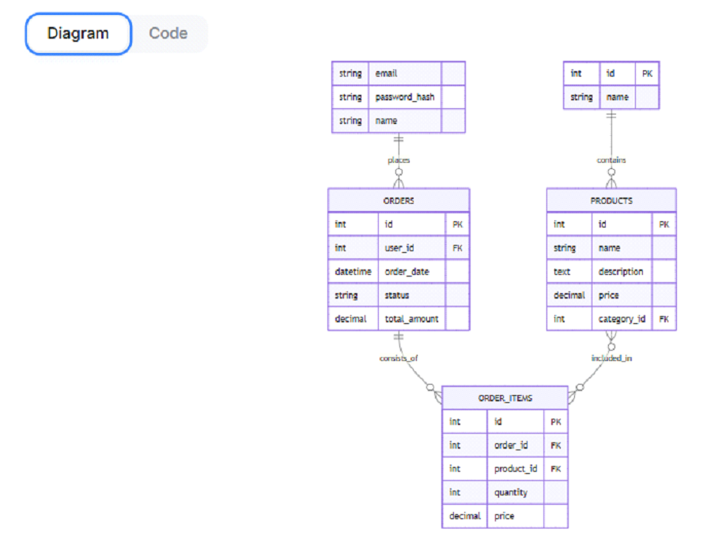

Цель: Спроектировать и отобразить графически основные компоненты системы, их взаимодействие и место в общей структуре.
Для веб-приложений, таких как интернет-магазин, наиболее распространена трехуровневая (трехзвенная) архитектура. Она обеспечивает модульность, масштабируемость и безопасность.
Одной картинкой архитектуру не описать. Нужно создать несколько взаимосвязанных моделей.
Задача: Показать, с какими внешними системами и субъектами будет взаимодействовать наша ИС.
Пример для интернет-магазина:
Задача: Показать основные программные модули (компоненты) системы и связи между ними.
Задача: Показать, на каких реальных или виртуальных серверах будут развернуты компоненты системы.

flowchart TD
subgraph Internet [Интернет]
direction LR
A1[Пользователи]
A2[Администраторы]
end
subgraph DMZ [Демилитаризованная зона
DMZ]
B1[Балансировщик
нагрузки
Load Balancer]
end
subgraph InternalNetwork [Внутренняя сеть]
subgraph WebTier [Веб-уровень]
C1[Веб-сервер 1
Nginx]
C2[Веб-сервер 2
Nginx]
end
subgraph AppTier [Уровень приложений]
D1[Сервер приложений 1
Node.js/Docker]
D2[Сервер приложений 2
Node.js/Docker]
end
subgraph DataTier [Уровень данных]
E1[Кластер БД
PostgreSQL]
E2[Сервер кеша
Redis]
end
end
Internet --> DMZ
DMZ --> WebTier
WebTier --> AppTier
AppTier --> DataTier
Задача: Показать структуру базы данных — сущности, их атрибуты и связи.
(Упрощенный пример)

code
erDiagram
USERS {
int id PK
string email
string password_hash
string name
}
PRODUCTS {
int id PK
string name
text description
decimal price
int category_id FK
}
CATEGORIES {
int id PK
string name
}
ORDERS {
int id PK
int user_id FK
datetime order_date
string status
decimal total_amount
}
ORDER_ITEMS {
int id PK
int order_id FK
int product_id FK
int quantity
decimal price
}
USERS ||--o{ ORDERS : "places"
CATEGORIES ||--o{ PRODUCTS : "contains"
ORDERS ||--o{ ORDER_ITEMS : "consists_of"
PRODUCTS }o--o{ ORDER_ITEMS : "included_in"
Эта работа покажет, что вы понимаете не только что делать, но и как это должно быть реализовано на практике.